Last updated: 2025-06-22
Checks: 6 1
Knit directory: abl_dms/
This reproducible R Markdown analysis was created with workflowr (version 1.6.2). The Checks tab describes the reproducibility checks that were applied when the results were created. The Past versions tab lists the development history.
The R Markdown is untracked by Git. To know which version of the R
Markdown file created these results, you’ll want to first commit it to
the Git repo. If you’re still working on the analysis, you can ignore
this warning. When you’re finished, you can run
wflow_publish to commit the R Markdown file and build the
HTML.
Great job! The global environment was empty. Objects defined in the global environment can affect the analysis in your R Markdown file in unknown ways. For reproduciblity it’s best to always run the code in an empty environment.
The command set.seed(20250621) was run prior to running
the code in the R Markdown file. Setting a seed ensures that any results
that rely on randomness, e.g. subsampling or permutations, are
reproducible.
Great job! Recording the operating system, R version, and package versions is critical for reproducibility.
Nice! There were no cached chunks for this analysis, so you can be confident that you successfully produced the results during this run.
Great job! Using relative paths to the files within your workflowr project makes it easier to run your code on other machines.
Great! You are using Git for version control. Tracking code development and connecting the code version to the results is critical for reproducibility.
The results in this page were generated with repository version 253724b. See the Past versions tab to see a history of the changes made to the R Markdown and HTML files.
Note that you need to be careful to ensure that all relevant files for
the analysis have been committed to Git prior to generating the results
(you can use wflow_publish or
wflow_git_commit). workflowr only checks the R Markdown
file, but you know if there are other scripts or data files that it
depends on. Below is the status of the Git repository when the results
were generated:
Ignored files:
Ignored: .DS_Store
Ignored: .Rproj.user/
Ignored: analysis/.Rhistory
Ignored: data/.DS_Store
Ignored: output/.DS_Store
Untracked files:
Untracked: analysis/Adding_Confidence_Intervals.Rmd
Untracked: analysis/Homepage_Spike_In_Mutants.Rmd
Untracked: analysis/dose_response_curve_fitting_with_errorbars.Rmd
Untracked: analysis/spikeins_depthofcoverages.Rmd
Untracked: analysis/twinstrand_spikeins_data_generation.Rmd
Untracked: data/Twinstrand/
Untracked: data/ic50data/
Untracked: data/spikeins_maf_merge_formanuscript.csv
Untracked: dosing_normalization_stdevs_paired.pdf
Untracked: output/spikeins_figures/
Untracked: output/twinstrand_maf_merge.csv
Untracked: output/twinstrand_simple_melt_merge.csv
Unstaged changes:
Modified: analysis/index.Rmd
Note that any generated files, e.g. HTML, png, CSS, etc., are not included in this status report because it is ok for generated content to have uncommitted changes.
There are no past versions. Publish this analysis with
wflow_publish() to start tracking its development.
This RMD file should serve to generate processed versions of all the data that goes into Figure 2 of the paper. The aim here is to take in predicted growth rate confidence intervals, and generate expected count data from them. The other aim is to take dose-normalized data (for microvariations) and add columns for normal vs normalized. The final aim is to include count-types of log-fold enrichment, enrich2, and our counts. One subaim is to also add Day 0 MAF counts of M3 as the ones for M5 and M7. And of M6 for M4 and of Sp_Enu_4 for Sp_Enu_3
# rm(list=ls())
twinstrand_maf_merge=read.csv("data/Twinstrand/twinstrand_maf_merge.csv",header = T,stringsAsFactors = F)
# twinstrand_maf_merge=read.csv("../output/twinstrand_maf_merge.csv",header = T,stringsAsFactors = F,row.names = 1)
# ic50data_all_sum=read.csv("../output/ic50data_all_confidence_intervals_raw_data.csv",row.names = 1)
ic50data_all_sum=read.csv("data/ic50data/ic50data_all_confidence_intervals_raw_data.csv",row.names = 1)
#First, creating day 0 values for M4,M5,M7, and sp_enu_3. So M5's and M7's D0 counts are M3's. And M4's D0 counts are M6's. Sp_Enu_3's D0 counts are Sp_Enu_4's D0 counts.
M3D0=twinstrand_maf_merge%>%filter(experiment=="M3",time_point=="D0")
M3D0_v2=M3D0%>%filter(!mutant%in%NA)
M3D0_v2=M3D0_v2%>%dplyr::select(mutant,AltDepth)
# M3D6=twinstrand_maf_merge%>%filter(experiment=="M3",time_point=="D3")
M5D0=M3D0%>%mutate(experiment="M5")
M7D0=M3D0%>%mutate(experiment="M7")
M6D0=twinstrand_maf_merge%>%filter(experiment=="M6",time_point=="D0")
M6D0_v2=M6D0%>%filter(!mutant%in%NA)
M6D0_v2=M6D0_v2%>%dplyr::select(mutant,AltDepth)
M4D0=M6D0%>%mutate(experiment="M4")
Enu4_D0=twinstrand_maf_merge%>%filter(experiment=="Enu_4",time_point=="D0")
Enu3_D0=Enu4_D0%>%mutate(experiment="Enu_3")
twinstrand_maf_merge=rbind(twinstrand_maf_merge,M5D0,M7D0,M4D0,Enu3_D0)
########################Adding Confidence Intervals in Drug Effect to the Counts########################
############Adding Enrich2 Adjustments to MAF################
twinstrand_maf_merge2=twinstrand_maf_merge%>%filter(!VariationType%in%"indel",tki_resistant_mutation%in%"True",!mutant%in%NA)%>%dplyr::select(!c(X,Sample,Chromosome))
wt_count=twinstrand_maf_merge2%>%group_by(experiment,time_point)%>%summarize(wt_count=mean(Depth)-sum(AltDepth))`summarise()` has grouped output by 'experiment'. You can override using the `.groups` argument.twinstrand_maf_merge2=merge(twinstrand_maf_merge2,wt_count,by = c("experiment","time_point"))
twinstrand_maf_merge2=twinstrand_maf_merge2%>%mutate(MAF_enrich2=(AltDepth/wt_count))
twinstrand_maf_merge=twinstrand_maf_merge2
############################Addding Log-Fold Enrichment#################
twinstrand_maf_merge=twinstrand_maf_merge%>%filter(experiment%in%c("M3","M5","M7"))%>%mutate(MAF=AltDepth/Depth)
# twinstrand_maf_merge=twinstrand_maf_merge%>%filter(experiment%in%c("Enu_3","Enu_4"))%>%mutate(MAF=AltDepth/Depth)
########################
twinstrand_maf_merge=merge(twinstrand_maf_merge%>%
filter(tki_resistant_mutation=="True",!mutant%in%c("D276G",NA)),ic50data_all_sum%>%
dplyr::select(species,netgr_pred_mean,netgr_pred_ci_ul,netgr_pred_ci_ll,netgr_pred_sd_ul,netgr_pred_sd_ll,netgr_pred_model,netgr_pred_model_sd_ul,netgr_pred_model_sd_ll),by.x="mutant",by.y="species")
twinstrand_simple=twinstrand_maf_merge%>%dplyr::select(AltDepth,Depth,tki_resistant_mutation,mutant,experiment,Spike_in_freq,time_point,totalcells,totalmutant,MAF,MAF_enrich2,netgr_pred_mean,netgr_pred_ci_ul,netgr_pred_ci_ll,netgr_pred_sd_ul,netgr_pred_sd_ll,netgr_pred_model,netgr_pred_model_sd_ul,netgr_pred_model_sd_ll)
twinstrand_merge_forplot=melt(twinstrand_simple,id.vars = c("AltDepth","Depth","tki_resistant_mutation","mutant","experiment","Spike_in_freq","time_point","totalcells","netgr_pred_mean","netgr_pred_ci_ul","netgr_pred_ci_ll","netgr_pred_sd_ul","netgr_pred_sd_ll","netgr_pred_model","netgr_pred_model_sd_ul","netgr_pred_model_sd_ll"),variable.name = "count_type",value.name = "count")
# twinstrand_merge_forplot=merge(twinstrand_maf_merge%>%filter(experiment=="M3",tki_resistant_mutation=="True",!mutant%in%c("D276G",NA)),ic50data_all_sum%>%dplyr::select(species,netgr_pred_mean,netgr_pred_ci_ul,netgr_pred_ci_ll,netgr_pred_sd_ul,netgr_pred_sd_ll),by.x="mutant",by.y="species")
#Basically making an extra column with the D0 total mutant counts for each mutant
# a=twinstrand_maf_merge%>%filter(time_point=="D0")
twinstrand_merge_forplot=merge(twinstrand_merge_forplot,twinstrand_merge_forplot%>%filter(time_point=="D0")%>%dplyr::select(mutant,count_type,experiment,count_D0=count),by=c("mutant","count_type","experiment"))
#########Here, figure out why twinstrand_merge_forplot is having two rows for each mutant after being merged with a D0 version of itself. This is leading to weird plotting artifacts
# a=twinstrand_merge_forplot%>%filter(count_type=="totalmutant",mutant=="E255K",time_point=="D0")
############
twinstrand_merge_forplot=twinstrand_merge_forplot%>%mutate(time=case_when(time_point=="D0"~0,
time_point=="D3"~72,
time_point=="D6"~144),
ci_mean=count_D0*exp(netgr_pred_mean*time),
ci_ul=count_D0*exp(netgr_pred_ci_ul*time),
ci_ll=count_D0*exp(netgr_pred_ci_ll*time),
sd_ul=count_D0*exp(netgr_pred_sd_ul*time),
sd_ll=count_D0*exp(netgr_pred_sd_ll*time))
####Should probably not use sd_ul, sd_ul etc for predictions because they're added to the means of the actual dose responses rather than the means of the dose responses off of the 4 parameter model. Use sd_ul_pred, sd_ll_pred instead
twinstrand_merge_forplot=twinstrand_merge_forplot%>%mutate(ci_ll=case_when(ci_ll=="NaN"~0,
TRUE~ci_ll))
####Since the more sensitive mutants were appearing to grow fast if I take the raw IC50 predicted growth rates, I am going to instead take the predicted growth rates from the IC50s that were fit on a 4-parameter logistic. To get standard deviations, I will just add/subtract the standard deviations from the regular plots.
# twinstrand_merge_forplot=merge(twinstrand_merge_forplot,ic50data_long%>%filter(conc==conc_for_predictions)%>%dplyr::select(mutant,netgr_pred_model=netgr_pred),by = "mutant")
# twinstrand_merge_forplot=twinstrand_merge_forplot%>%mutate(netgr_pred_model_sd_ul=netgr_pred_model+(netgr_pred_mean-netgr_pred_sd_ll),netgr_pred_model_sd_ll=netgr_pred_model-(netgr_pred_mean-netgr_pred_sd_ll))
twinstrand_merge_forplot=twinstrand_merge_forplot%>%
mutate(sd_mean_pred=count_D0*exp(netgr_pred_model*time),
sd_ul_pred=count_D0*exp(netgr_pred_model_sd_ul*time),
sd_ll_pred=count_D0*exp(netgr_pred_model_sd_ll*time))
twinstrand_merge_forplot=twinstrand_merge_forplot%>%mutate(ci_ll=case_when(ci_ll=="NaN"~0,
TRUE~ci_ll))
###########
#Factoring the mutants from more to less resistant
twinstrand_merge_forplot$mutant=factor(twinstrand_merge_forplot$mutant,levels = as.character(unique(twinstrand_merge_forplot$mutant[order((twinstrand_merge_forplot$netgr_pred_mean),decreasing = T)])))
netgr_corrected_compiled=read.csv("data/Twinstrand/twinstrand_microvariations_normalized.csv")
# netgr_corrected_compiled=read.csv("../output/twinstrand_microvariations_normalized.csv")
twinstrand_simple=twinstrand_merge_forplot%>%dplyr::select(count_type,mutant,experiment,Spike_in_freq,time_point,count,count_D0,time,sd_mean_pred,sd_ll_pred,sd_ul_pred)
twinstrand_simple_merge=merge(twinstrand_simple,netgr_corrected_compiled,by = c("mutant","experiment"))
# twinstrand_simple_merge=twinstrand_simple_merge%>%mutate(count_inferred=round(count_D0*exp(netgr_obs*time),0))
twinstrand_simple_merge=twinstrand_simple_merge%>%mutate(count_inferred=count_D0*exp(netgr_obs*time))
twinstrand_simple_merge_rearranged=twinstrand_simple_merge%>%dplyr::select(count_type,mutant,experiment,Spike_in_freq,time_point,time,count,correction_status,netgr_obs,count_inferred,sd_mean_pred,sd_ul_pred,sd_ll_pred)
# write.csv(twinstrand_simple_merge_rearranged,"output/twinstrand_simple_merge_rearranged.csv")
# ggplot(twinstrand_simple_merge%>%filter(experiment%in%c("M3","M5","M7"),count_type%in%"MAF"),aes(x=time/24,y=count_inferred,color=mutant))+facet_wrap(~mutant)+geom_point()+geom_line()+scale_y_continuous(trans="log10")
###
twinstrand_simple_errorbars=twinstrand_simple_merge%>%
group_by(count_type,mutant,correction_status,time_point,time)%>%
summarize(count_mean=mean(count),
count_sd=sd(count),
count_inferred_mean=mean(count_inferred),
count_inferred_sd=sd(count_inferred),
sd_mean_pred=mean(sd_mean_pred),
sd_ul_pred=mean(sd_ul_pred),
sd_ll_pred=mean(sd_ll_pred),
n=n())%>%
mutate(count_se=count_sd/sqrt(n),
count_ci=abs(qt(1-(.05/2),n-1)*count_se),
count_ci=case_when(count_mean-count_ci<=0~count_mean,
TRUE~count_ci))`summarise()` has grouped output by 'count_type', 'mutant', 'correction_status', 'time_point'. You can override using the `.groups` argument.# a=twinstrand_simple_errorbars%>%filter(mutant%in%"T315I")
# a=twinstrand_merge_forplot%>%filter(mutant%in%"T315I")Making growthrates dataframe for all experiment types
twinstrand_maf_merge=twinstrand_simple_merge_rearranged%>%filter(count_type%in%"MAF_enrich2",correction_status%in%"netgr_obs")
twinstrand_simple=twinstrand_maf_merge%>%filter(!is.na(mutant),!is.na(experiment))
twinstrand_simple=twinstrand_simple%>%dplyr::select("mutant","experiment","Spike_in_freq","time_point","count")
twinstrand_simple_cast=dcast(twinstrand_simple,mutant+experiment+Spike_in_freq~time_point,value.var="count")
twinstrand_simple_cast$d0d3=log(twinstrand_simple_cast$D3/twinstrand_simple_cast$D0)/72
twinstrand_simple_cast$d3d6=log(twinstrand_simple_cast$D6/twinstrand_simple_cast$D3)/72
twinstrand_simple_cast$d0d6=log(twinstrand_simple_cast$D6/twinstrand_simple_cast$D0)/144
#Check if ln(final/initial)/time is the correct formula. Also notice how I'm using days not hours
twinstrand_simple_melt=melt(twinstrand_simple_cast[,-c(4:6)],id.vars=c("mutant","experiment","Spike_in_freq"),variable.name = "duration",value.name = "netgr_obs") #!!!!!!!!!!!value name should be drug effect. And drug effect should be drug_effect_obs i think. NO. I think this should be drug_effect_obs. Fixed 4/2/20
twinstrand_simple_melt$drug_effect_obs=net_gr_wodrug-twinstrand_simple_melt$netgr_obs
# twinstrand_simple_melt_merge=merge(twinstrand_simple_melt,ic50data_formerge,"mutant")
# twinstrand_simple_melt_merge=merge(twinstrand_simple_melt,ic50data_long,"mutant")
ic50data_all_conc=read.csv("data/ic50data/ic50data_all_conc.csv",header = T,stringsAsFactors = F)
ic50data_long=ic50data_all_conc%>%mutate(conc==conc_for_predictions)
twinstrand_simple_melt_merge=merge(twinstrand_simple_melt,ic50data_long%>%dplyr::filter(conc==conc_for_predictions),all.x = T)getPalette = colorRampPalette(brewer.pal(9, "Spectral"))
####In the plots below, the dashed line is the mean prediction form the IC50s. Points are what we see in the spike-in experiment
####MAF Raw
label_positions <- twinstrand_simple_errorbars%>%filter(count_type%in%"MAF",correction_status%in%"netgr_obs") %>%
group_by(mutant) %>%
summarise(
x = 0, # consistent left edge on log10 scale
y = 1, # high enough for all panels
label = unique(mutant)
)
ggplot(twinstrand_simple_errorbars%>%filter(count_type%in%"MAF",correction_status%in%"netgr_obs"),aes(x=time/24,y=count_mean,fill=factor(mutant)))+
geom_line(aes(y=sd_mean_pred),linetype="dashed")+
geom_line(aes(y=sd_ll_pred))+
geom_line(aes(y=sd_ul_pred))+
geom_ribbon(aes(ymin=count_mean-count_sd,ymax=count_mean+count_sd,alpha=.3))+
geom_point(colour="black",shape=21,size=2,aes(fill=factor(mutant)))+
geom_text(data = label_positions, aes(x = x, y = y, label = label),
inherit.aes = FALSE, hjust = 0, vjust = 1, fontface = "bold", size = 3.5) +
# geom_errorbar(aes(ymin=count_mean-count_sd,ymax=count_mean+count_sd),width=.9)+
facet_wrap(~mutant,nrow=3)+
scale_y_continuous(trans="log10",name="Mutant allele fraction",label = trans_format("log10", math_format(10^.x)))+
scale_x_continuous(name="Time (Days)",breaks=c(0,3,6))+
cleanup+
scale_fill_manual(values = getPalette(length(unique(twinstrand_merge_forplot$mutant))))+
scale_color_manual(values = getPalette(length(unique(twinstrand_merge_forplot$mutant))))+
theme(legend.position = "none",
# axis.text.y = element_blank(),
# axis.ticks.y = element_blank(),
strip.text=element_blank()
# axis.title.x = element_blank(),
# axis.title.y=element_blank()
)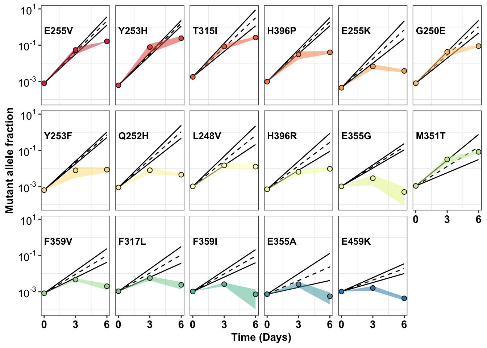
# ggsave("output/spikeins_figures/maf_fig_raw_081525.pdf",width=6,height=3,units="in",useDingbats=F)
# ggsave("pooled_maf_fig_raw_081520.pdf",width=4,height=4,units="in",useDingbats=F)
####Total Mutant Raw
ggplot(twinstrand_simple_errorbars%>%filter(count_type%in%"totalmutant",correction_status%in%"netgr_obs",!mutant%in%c("E355A")),aes(x=time/24,y=count_mean,fill=factor(mutant)))+
geom_line(aes(y=sd_mean_pred),linetype="dashed")+
geom_line(aes(y=sd_ll_pred))+
geom_line(aes(y=sd_ul_pred))+
geom_ribbon(aes(color=factor(mutant),ymin=count_mean-count_sd,ymax=count_mean+count_sd,alpha=.3))+
geom_point(colour="black",shape=21,size=2,aes(fill=factor(mutant)))+
# geom_errorbar(aes(ymin=count_mean-count_sd,ymax=count_mean+count_sd),width=.9)+
facet_wrap(~mutant,ncol=4)+
scale_y_continuous(trans="log10",name="Count")+
scale_x_continuous(name="Time (Days)",breaks=c(0,3,6))+
cleanup+
scale_fill_manual(values = getPalette(length(unique(twinstrand_merge_forplot$mutant))))+
scale_color_manual(values = getPalette(length(unique(twinstrand_merge_forplot$mutant))))+
theme(legend.position = "none",
# axis.text.y = element_blank(),
# axis.ticks.y = element_blank(),
strip.text=element_blank()
# axis.title.x = element_blank(),
# axis.title.y=element_blank()
)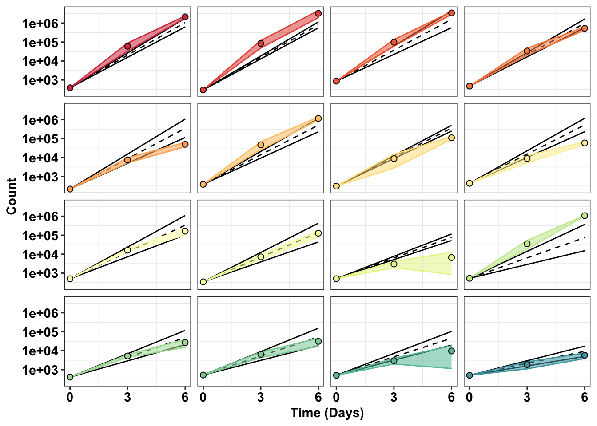
# ggsave("pooled_growth_fig_raw_081520.pdf",width=4,height=4,units="in",useDingbats=F)
####Total Mutant Corrected
ggplot(twinstrand_simple_errorbars%>%filter(count_type%in%"totalmutant",correction_status%in%"netgr_obs_corrected",!mutant%in%c("E355A")),aes(x=time/24,y=count_inferred_mean,fill=factor(mutant)))+
geom_line(aes(y=sd_mean_pred),linetype="dashed")+
geom_line(aes(y=sd_ll_pred))+
geom_line(aes(y=sd_ul_pred))+
geom_ribbon(aes(color=factor(mutant),ymin=count_inferred_mean-count_inferred_sd,ymax=count_inferred_mean+count_inferred_sd,alpha=.3))+
geom_point(colour="black",shape=21,size=2,aes(fill=factor(mutant)))+
# geom_errorbar(aes(ymin=count_mean-count_sd,ymax=count_mean+count_sd),width=.9)+
facet_wrap(~mutant,ncol=4)+
scale_y_continuous(trans="log10",name="Count")+
scale_x_continuous(name="Time (Days)",breaks=c(0,3,6))+
cleanup+
scale_fill_manual(values = getPalette(length(unique(twinstrand_merge_forplot$mutant))))+
scale_color_manual(values = getPalette(length(unique(twinstrand_merge_forplot$mutant))))+
theme(legend.position = "none",
# axis.text.y = element_blank(),
# axis.ticks.y = element_blank(),
strip.text=element_blank()
# axis.title.x = element_blank(),
# axis.title.y=element_blank()
)Warning in self$trans$transform(x): NaNs producedWarning: Transformation introduced infinite values in continuous y-axis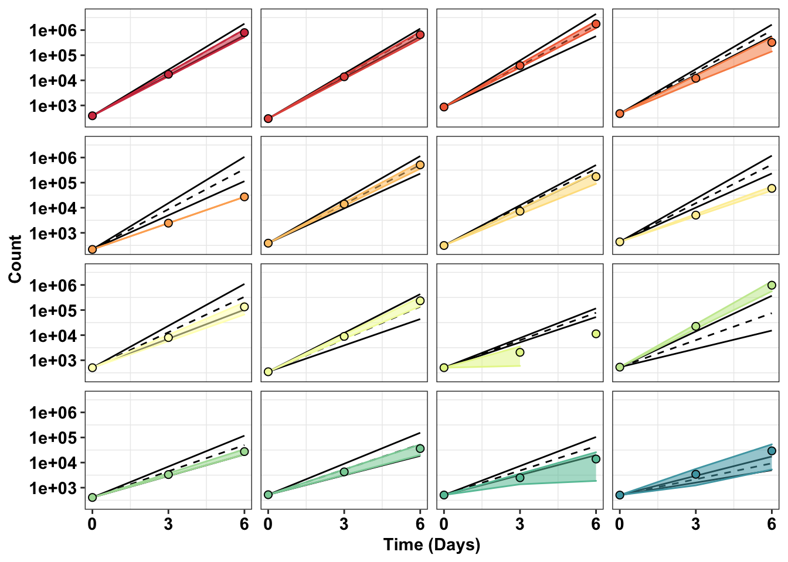
# ggsave("pooled_growth_fig_corrected_081520.pdf",width=4,height=4,units="in",useDingbats=F)
####MAF WT Raw
ggplot(twinstrand_simple_errorbars%>%filter(count_type%in%"MAF_enrich2",correction_status%in%"netgr_obs",!mutant%in%c("E355A")),aes(x=time/24,y=count_mean,fill=factor(mutant)))+
geom_line(aes(y=sd_mean_pred),linetype="dashed")+
geom_line(aes(y=sd_ll_pred))+
geom_line(aes(y=sd_ul_pred))+
geom_ribbon(aes(color=factor(mutant),ymin=count_mean-count_sd,ymax=count_mean+count_sd,alpha=.3))+
geom_point(colour="black",shape=21,size=2,aes(fill=factor(mutant)))+
# geom_errorbar(aes(ymin=count_mean-count_sd,ymax=count_mean+count_sd),width=.9)+
facet_wrap(~mutant,ncol=4)+
scale_y_continuous(trans="log10",name="Count",label = trans_format("log10", math_format(10^.x)))+
scale_x_continuous(name="Time (Days)",breaks=c(0,3,6))+
cleanup+
scale_fill_manual(values = getPalette(length(unique(twinstrand_merge_forplot$mutant))))+
scale_color_manual(values = getPalette(length(unique(twinstrand_merge_forplot$mutant))))+
theme(legend.position = "none",
# axis.text.y = element_blank(),
# axis.ticks.y = element_blank(),
strip.text=element_blank()
# axis.title.x = element_blank(),
# axis.title.y=element_blank()
)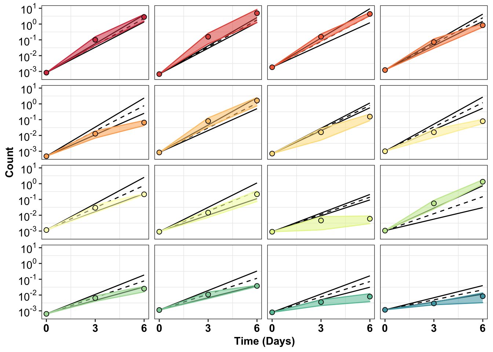
# ggsave("pooled_maf_wt_fig_raw_081520.pdf",width=4,height=4,units="in",useDingbats=F)####Total Mutant Raw
label_positions <- twinstrand_simple_errorbars%>%filter(count_type%in%"totalmutant",correction_status%in%"netgr_obs") %>%
group_by(mutant) %>%
summarise(
x = 2.5, # consistent left edge on log10 scale
y = 1000, # high enough for all panels
label = unique(mutant)
)
ggplot(twinstrand_simple_errorbars%>%filter(count_type%in%"totalmutant",correction_status%in%"netgr_obs"),aes(x=time/24,y=count_mean,fill=factor(mutant)))+
geom_line(aes(y=sd_mean_pred),linetype="dashed")+
geom_line(aes(y=sd_ll_pred))+
geom_line(aes(y=sd_ul_pred))+
geom_ribbon(aes(ymin=count_mean-count_sd,ymax=count_mean+count_sd,alpha=.3))+
geom_point(colour="black",shape=21,size=2,aes(fill=factor(mutant)))+
geom_text(data = label_positions, aes(x = x, y = y, label = label),
inherit.aes = FALSE, hjust = 0, vjust = 1, fontface = "bold", size = 3.5) +
# geom_errorbar(aes(ymin=count_mean-count_sd,ymax=count_mean+count_sd),width=.9)+
facet_wrap(~mutant,nrow=3)+
scale_y_continuous(trans="log10",name="Total mutant count",
label = trans_format("log10", math_format(10^.x)))+
scale_x_continuous(name="Time (Days)",breaks=c(0,3,6))+
cleanup+
scale_fill_manual(values = getPalette(length(unique(twinstrand_merge_forplot$mutant))))+
scale_color_manual(values = getPalette(length(unique(twinstrand_merge_forplot$mutant))))+
theme(legend.position = "none",
axis.text.y = element_text(face = "bold",size=11),
# axis.ticks.y = element_blank(),
strip.text=element_blank()
# axis.title.x = element_blank(),
# axis.title.y=element_blank()
)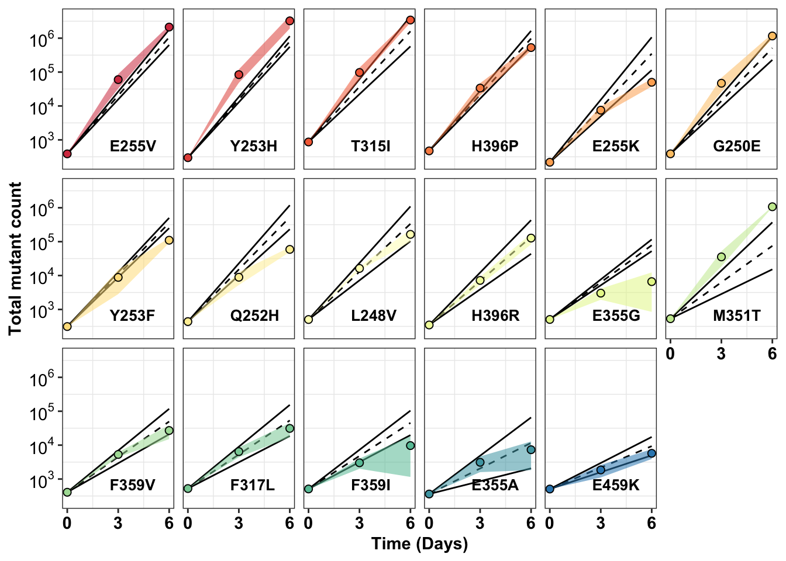
# ggsave("output/spikeins_figures/pooled_growth_fig_raw_061725.pdf",width=6,height=3,units="in",useDingbats=F)###Grabbing growth rates of Enrich2 data
twinstrand_simple_melt_merge$correction_status="enrich2"
####################Just showing the improvement in error correction between the two replicates####################
#How much do the standard deviations across replicates change in all replicates
# a=netgr_corrected_compiled%>%filter(mutant%in%"F359I",correction_status%in%"netgr_obs_corrected")
netgr_corrected_compiled=read.csv("data/Twinstrand/twinstrand_microvariations_normalized.csv")
###Merging Enrich2 netgr and our netgrs with and without correction
netgr_corrected_compiled=rbind(netgr_corrected_compiled%>%dplyr::select(-netgr_model_m3),twinstrand_simple_melt_merge%>%dplyr::select(mutant,experiment,correction_status,netgr_obs))
netgr_corrected_errorbars=netgr_corrected_compiled%>%group_by(mutant,correction_status)%>%summarize(netgr_obs_mean=mean(netgr_obs),netgr_obs_sd=sd(netgr_obs))`summarise()` has grouped output by 'mutant'. You can override using the `.groups` argument.# netgr_corrected_errorbars=netgr_corrected_compiled%>%group_by(mutant)%>%summarize(netgr_obs_mean=mean(netgr_obs),netgr_obs_sd=sd(netgr_obs),netgr_obs_corrected_mean=mean(netgr_obs_corrected),netgr_obs_corrected_sd=sd(netgr_obs_corrected))
#Factoring the mutants from more to less resistant
netgr_corrected_errorbars$mutant=factor(netgr_corrected_errorbars$mutant,levels = as.character(unique(netgr_corrected_errorbars$mutant[order((netgr_corrected_errorbars$netgr_obs_mean),decreasing = T)])))
netgr_corrected_compiled$mutant=factor(netgr_corrected_compiled$mutant,levels = as.character(unique(netgr_corrected_compiled$mutant[order((netgr_corrected_compiled$netgr_obs),decreasing = T)])))
# netgr_corrected_errorbars_melt=melt(netgr_corrected_errorbars,id.vars = "mutant",measure.vars = c("netgr_obs_sd","netgr_obs_corrected_sd"),variable.name = "correction_status",value.name = "sd")
netgr_corrected_errorbars=netgr_corrected_errorbars%>%
mutate(correction_status_name=case_when(correction_status%in%"netgr_obs"~"Raw",
correction_status%in%"netgr_obs_corrected"~"Corrected",
correction_status%in%"enrich2"~"WT Corrected"))
netgr_corrected_errorbars$correction_status_name=factor(netgr_corrected_errorbars$correction_status_name,levels=c("WT Corrected","Raw","Corrected"))
ggplot(netgr_corrected_errorbars%>%filter(!netgr_obs_sd%in%NA),aes(x=factor(correction_status_name),y=netgr_obs_sd))+
geom_col(color="black",aes(fill=mutant))+
facet_wrap(~mutant)+
cleanup+
scale_y_continuous(name="Standard Deviations in growth rates",breaks=c(0,.005,.01),labels=c("0","0.005","0.01"))+
scale_fill_manual(values = getPalette(length(unique(netgr_corrected_errorbars$mutant))))+
theme(legend.position = "none",
# axis.text.y=element_blank(),
axis.title.x = element_blank(),
axis.text.x=element_text(angle=20,hjust=.5,vjust=.5),
strip.text=element_blank())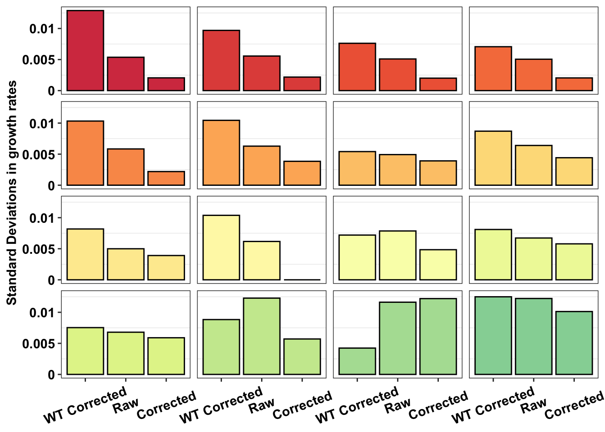
ggplot(netgr_corrected_errorbars%>%filter(!correction_status%in%"enrich2",!netgr_obs_sd%in%NA),aes(x=factor(correction_status_name),y=netgr_obs_sd))+
geom_col(color="black",aes(fill=mutant))+
facet_wrap(~mutant)+
cleanup+
scale_y_continuous(name="Standard Deviations in growth rates",breaks=c(0,.005,.01),labels=c("0","0.005","0.01"))+
scale_fill_manual(values = getPalette(length(unique(netgr_corrected_errorbars$mutant))))+
theme(legend.position = "none",
# axis.text.y=element_blank(),
axis.title.x = element_blank(),
axis.text.x=element_text(angle=20,hjust=.5,vjust=.5),
strip.text=element_blank())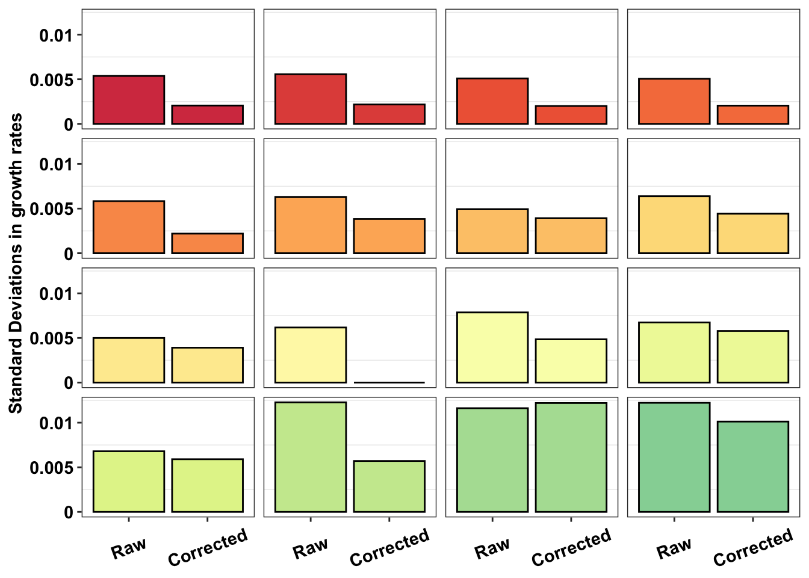
# ggsave("dosing_normalization_standard_deviations.pdf",width=4,height=4,units="in",useDingbats=F)
ggplot(netgr_corrected_errorbars%>%filter(!netgr_obs_sd%in%NA,!mutant%in%"E255K"),aes(x=factor(correction_status_name),y=netgr_obs_sd,group=mutant))+
geom_line()+
geom_point(color="black",size=3,shape=21,aes(fill=correction_status_name))+
cleanup+
theme(legend.position = "none",
axis.text.y=element_blank(),
# axis.text.y=element_text(size=9),
axis.ticks.y=element_blank())+
scale_fill_manual(values=c("black","gray","black"))+scale_x_discrete(name=element_blank())+scale_y_continuous(name="Standard deviation in growth rates")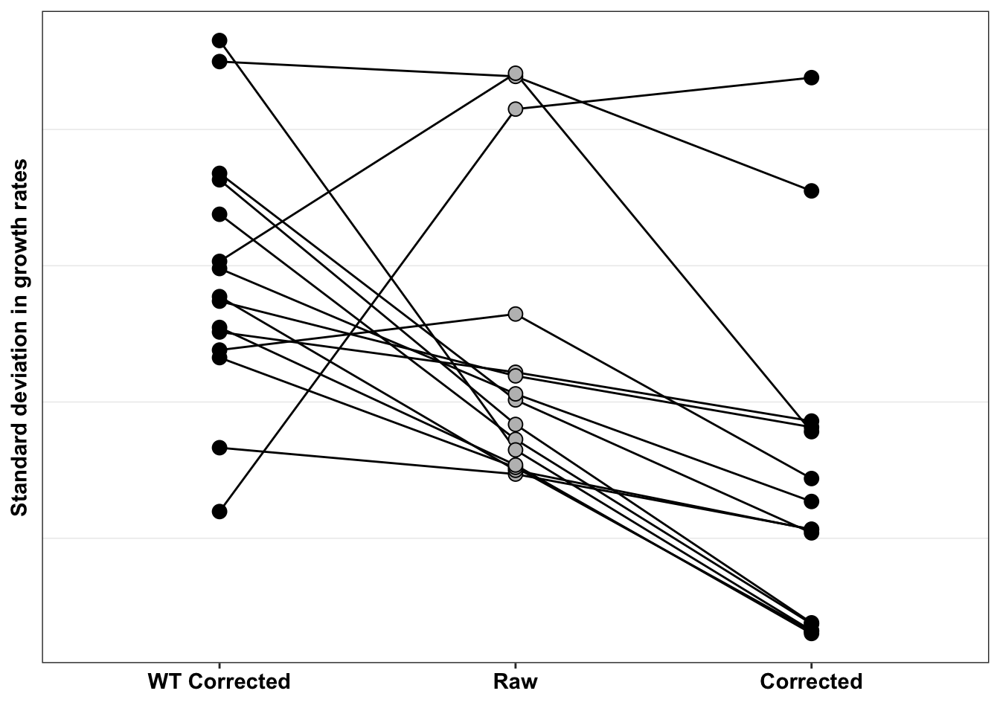
# ggsave("dosing_normalization_stdevs_paired.pdf",width=3,height=3,units="in",useDingbats=F)
ggplot(netgr_corrected_errorbars%>%filter(!correction_status%in%"enrich2",!netgr_obs_sd%in%NA,!mutant%in%"E255K"),aes(x=factor(correction_status_name),y=netgr_obs_sd,group=mutant))+
geom_line()+
geom_point(color="black",size=2,shape=21,aes(fill=correction_status_name))+
cleanup+
theme(legend.position = "none",
# axis.text.y=element_text(size=9),
axis.text.y=element_blank())+
scale_fill_manual(values=c("black","gray"))+scale_x_discrete(name=element_blank())+scale_y_continuous(name="Standard deviation in growth rates")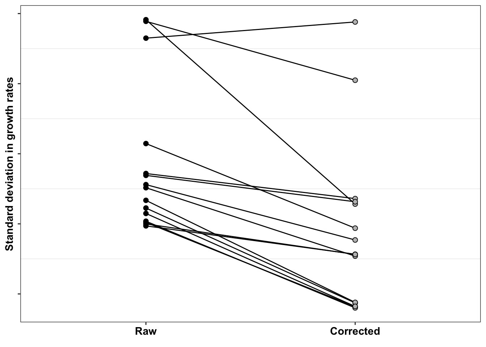
# ggsave("dosing_normalization_stdevs_paired.pdf",width=2,height=2,units="in",useDingbats=F)
#Conducting paired t test with the standard 2-sided alternative hypothesis
raw=netgr_corrected_errorbars%>%filter(!netgr_obs_sd%in%NA,!mutant%in%"E255K",correction_status_name%in%"Raw")%>%ungroup()%>%dplyr::select(netgr_obs_sd)
corrected=netgr_corrected_errorbars%>%filter(!netgr_obs_sd%in%NA,!mutant%in%"E255K",correction_status_name%in%"Corrected")%>%ungroup()%>%dplyr::select(netgr_obs_sd)
t.test(x=raw[[1]],y=corrected[[1]],mu = 0,paired = T,conf.level = 0.95)
Paired t-test
data: raw[[1]] and corrected[[1]]
t = 5.5402, df = 14, p-value = 7.281e-05
alternative hypothesis: true difference in means is not equal to 0
95 percent confidence interval:
0.001467049 0.003320446
sample estimates:
mean of the differences
0.002393747 ggplot(netgr_corrected_errorbars%>%filter(!correction_status%in%"netgr_obs",!netgr_obs_sd%in%NA,!mutant%in%"E255K"),aes(x=factor(correction_status_name),y=netgr_obs_sd,group=mutant))+
geom_line()+
geom_point(color="black",size=2,shape=21,aes(fill=correction_status_name))+
cleanup+
theme(legend.position = "none",
# axis.text.y=element_text(size=9),
axis.text.y=element_blank())+
scale_fill_manual(values=c("black","gray"))+scale_x_discrete(name=element_blank())+scale_y_continuous(name="Standard deviation in growth rates")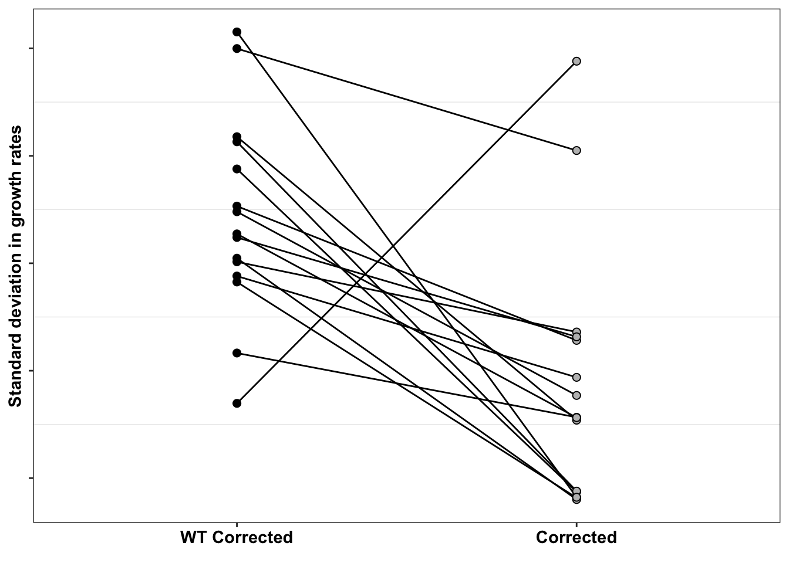
# ggsave("dosing_normalization_stdevs_paired_wt.pdf",width=2,height=2,units="in",useDingbats=F)
#Conducting paired t test with the standard 2-sided alternative hypothesis
raw=netgr_corrected_errorbars%>%filter(!netgr_obs_sd%in%NA,!mutant%in%"E255K",correction_status_name%in%"WT Corrected")%>%ungroup()%>%dplyr::select(netgr_obs_sd)
corrected=netgr_corrected_errorbars%>%filter(!netgr_obs_sd%in%NA,!mutant%in%"E255K",correction_status_name%in%"Corrected")%>%ungroup()%>%dplyr::select(netgr_obs_sd)
t.test(x=raw[[1]],y=corrected[[1]],mu = 0,paired = T,conf.level = 0.95)
Paired t-test
data: raw[[1]] and corrected[[1]]
t = 3.518, df = 14, p-value = 0.003411
alternative hypothesis: true difference in means is not equal to 0
95 percent confidence interval:
0.001498537 0.006179573
sample estimates:
mean of the differences
0.003839055 Looking at accuracy of our method vs shendure
#Calculating errors in observed datapoints.
twinstrand_merge_forplot_means=twinstrand_merge_forplot%>%group_by(mutant,count_type,time_point)%>%summarize(time=mean(time),count_mean_obs=mean(count),count_sd_obs=sd(count),sd_mean_model=mean(sd_mean_pred),sd_ll_model=mean(sd_ll_pred),sd_ul_model=mean(sd_ul_pred))`summarise()` has grouped output by 'mutant', 'count_type'. You can override using the `.groups` argument.twinstrand_merge_forplot_means=twinstrand_merge_forplot_means%>%mutate(percent_error=abs((count_mean_obs-sd_mean_model)*100/count_mean_obs))
twinstrand_merge_forplot_means=twinstrand_merge_forplot_means%>%
mutate(count_type_name=case_when(count_type%in%"totalmutant"~"Total Count",
count_type%in%"MAF"~"Allele Frequency",
count_type%in%"MAF_enrich2"~"Allele Frequency WT Corrected"))
twinstrand_merge_forplot_means$count_type_name=factor(twinstrand_merge_forplot_means$count_type_name,levels=c("Allele Frequency","Allele Frequency WT Corrected","Total Count"))
ggplot(twinstrand_merge_forplot_means%>%filter(!count_type%in%"MAF_enrich2",time_point=="D6"),aes(x=count_type_name,y=abs((count_mean_obs-sd_mean_model)*100/count_mean_obs),group=factor(mutant)))+
geom_line()+
geom_point(color="black",size=2,shape=21,aes(fill=count_type_name))+
scale_y_continuous(name="Percent Error")+
cleanup+
scale_fill_manual(values=c("black","gray"))+
theme(axis.title.x = element_blank(),
axis.text.y = element_blank(),
legend.position = "none")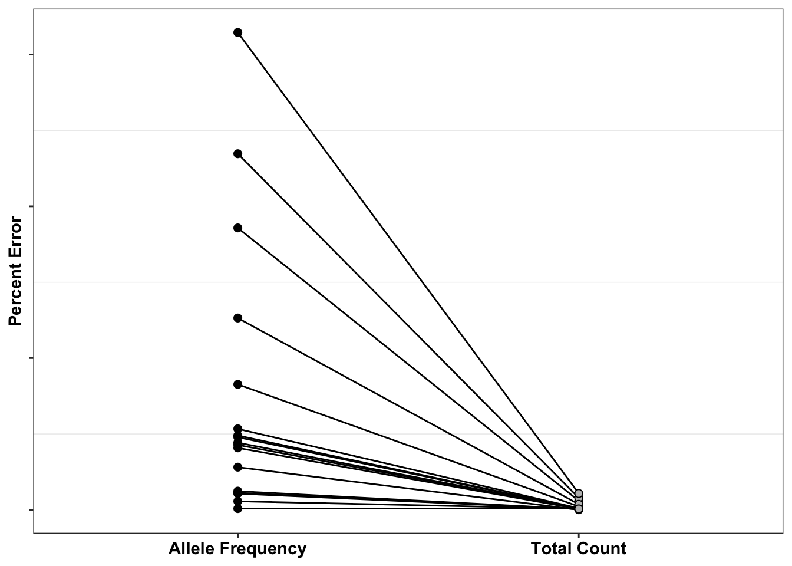
# ggsave("allelefrequencies_counts_D6_paired.pdf",width=2,height=2,units="in",useDingbats=F)
ggplot(twinstrand_merge_forplot_means%>%filter(!count_type%in%"MAF_enrich2",time_point=="D3"),aes(x=count_type_name,y=abs((count_mean_obs-sd_mean_model)*100/count_mean_obs),group=factor(mutant)))+
geom_line()+
geom_point(color="black",size=2,shape=21,aes(fill=count_type_name))+
scale_y_continuous(name="Percent Error")+
cleanup+
scale_fill_manual(values=c("black","gray"))+
theme(axis.title.x = element_blank(),
axis.text.y = element_blank(),
legend.position = "none")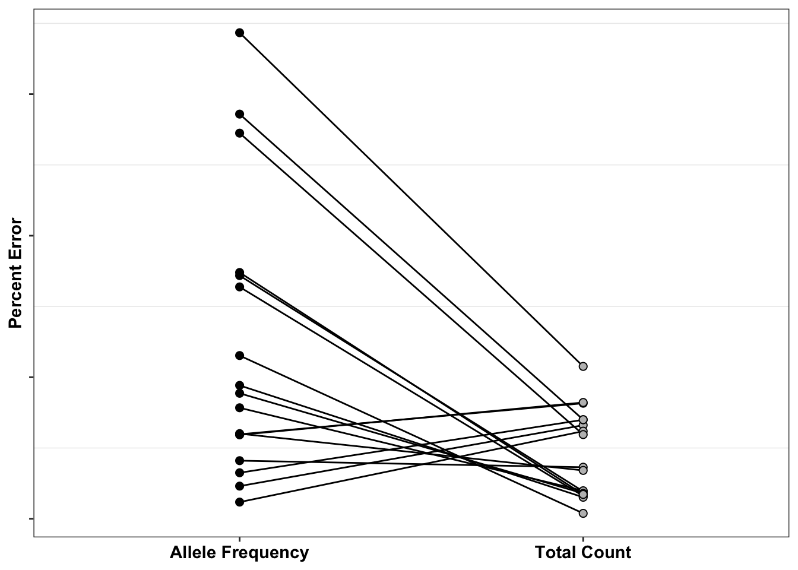
# ggsave("allelefrequencies_counts_D3_paired.pdf",width=2,height=2,units="in",useDingbats=F)
ggplot(twinstrand_merge_forplot_means%>%filter(!count_type%in%"MAF",time_point=="D3"),aes(x=count_type_name,y=abs((count_mean_obs-sd_mean_model)*100/count_mean_obs),group=factor(mutant)))+
geom_line()+
geom_point(color="black",size=2,shape=21,aes(fill=count_type_name))+
scale_y_continuous(name="Percent Error")+
cleanup+
scale_fill_manual(values=c("black","gray"))+
theme(axis.title.x = element_blank(),
axis.text.y = element_blank(),
legend.position = "none")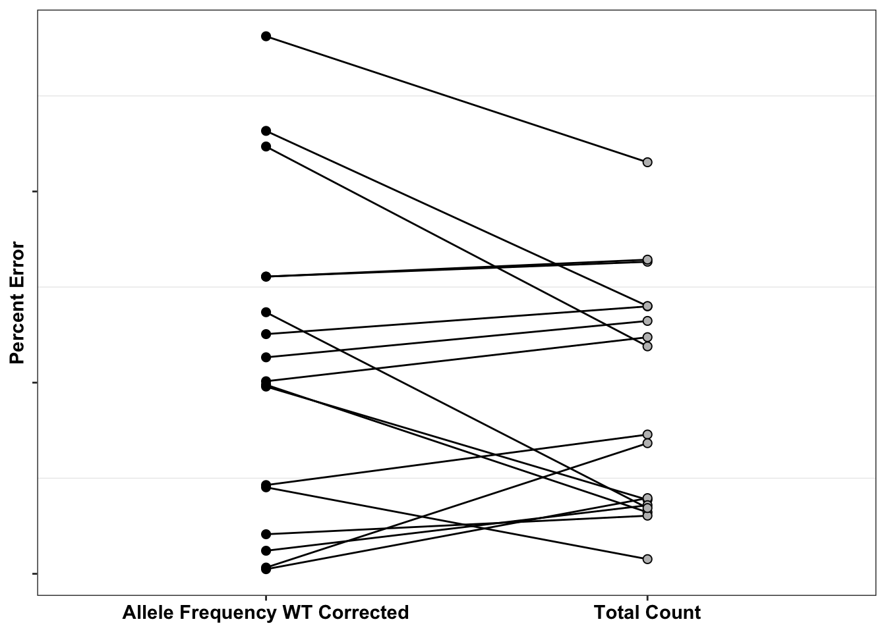
# ggsave("allelefrequencies_wt_counts_D3_paired.pdf",width=2,height=2,units="in",useDingbats=F)
ggplot(twinstrand_merge_forplot_means%>%filter(!count_type%in%"MAF",time_point=="D6"),aes(x=count_type_name,y=abs((count_mean_obs-sd_mean_model)*100/count_mean_obs),group=factor(mutant)))+
geom_line()+
geom_point(color="black",size=2,shape=21,aes(fill=count_type_name))+
scale_y_continuous(name="Percent Error")+
cleanup+
scale_fill_manual(values=c("black","gray"))+
theme(axis.title.x = element_blank(),
axis.text.y = element_blank(),
legend.position = "none")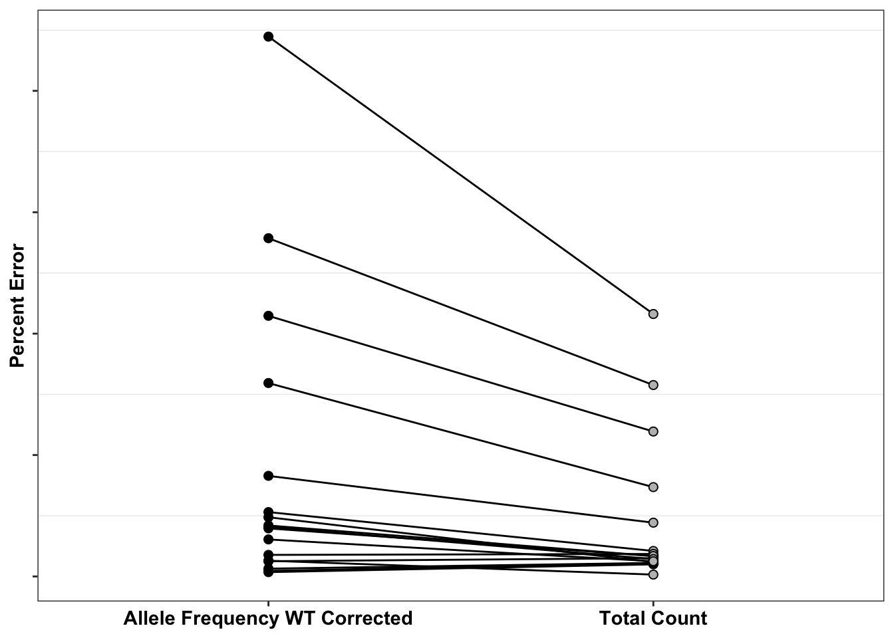
# ggsave("allelefrequencies_wt_counts_D6_paired.pdf",width=2,height=2,units="in",useDingbats=F)
ggplot(twinstrand_merge_forplot_means%>%filter(time_point=="D3"),aes(x=count_type_name,y=abs((count_mean_obs-sd_mean_model)*100/count_mean_obs),group=factor(mutant)))+
geom_line()+
geom_point(color="black",size=2,shape=21,aes(fill=count_type_name))+
scale_y_continuous(name="Percent Error")+
cleanup+
scale_fill_manual(values=c("black","gray","black"))+
theme(axis.title.x = element_blank(),
axis.text.y = element_blank(),
legend.position = "none")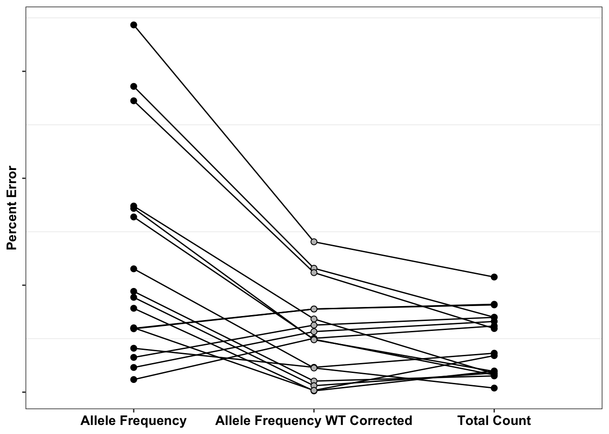
# ggsave("allelefrequencies_all_counts_D3_paired.pdf",width=2,height=2,units="in",useDingbats=F)
ggplot(twinstrand_merge_forplot_means%>%filter(time_point=="D6"),aes(x=count_type_name,y=abs((count_mean_obs-sd_mean_model)*100/count_mean_obs),group=factor(mutant)))+
geom_line()+
geom_point(color="black",size=2,shape=21,aes(fill=count_type_name))+
scale_y_continuous(name="Percent Error")+
cleanup+
scale_fill_manual(values=c("black","gray","black"))+
theme(axis.title.x = element_blank(),
axis.text.y = element_blank(),
legend.position = "none")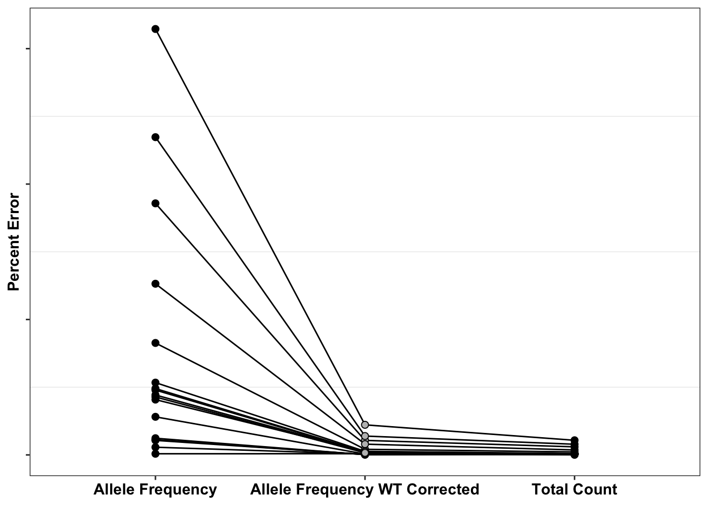
# ggsave("allelefrequencies_all_counts_D6_paired.pdf",width=2,height=2,units="in",useDingbats=F)
######Conducting paired t test with the standard 2-sided alternative hypothesis
# MAF vs Total Mutant D3
maf_error_d3=twinstrand_merge_forplot_means%>%filter(count_type%in%"MAF",time_point%in%"D3")%>%ungroup()%>%dplyr::select(percent_error)
totalmutant_error_d3=twinstrand_merge_forplot_means%>%filter(count_type%in%"totalmutant",time_point%in%"D3")%>%ungroup()%>%dplyr::select(percent_error)
t.test(x=maf_error_d3[[1]],y=totalmutant_error_d3[[1]],mu = 0,paired = T,conf.level = 0.95)
Paired t-test
data: maf_error_d3[[1]] and totalmutant_error_d3[[1]]
t = 3.2172, df = 16, p-value = 0.005379
alternative hypothesis: true difference in means is not equal to 0
95 percent confidence interval:
26.01573 126.53540
sample estimates:
mean of the differences
76.27557 # MAF vs Total Mutant D6
maf_error_d3=twinstrand_merge_forplot_means%>%filter(count_type%in%"MAF",time_point%in%"D6")%>%ungroup()%>%dplyr::select(percent_error)
totalmutant_error_d3=twinstrand_merge_forplot_means%>%filter(count_type%in%"totalmutant",time_point%in%"D6")%>%ungroup()%>%dplyr::select(percent_error)
t.test(x=maf_error_d3[[1]],y=totalmutant_error_d3[[1]],mu = 0,paired = T,conf.level = 0.95)
Paired t-test
data: maf_error_d3[[1]] and totalmutant_error_d3[[1]]
t = 3.5237, df = 16, p-value = 0.002819
alternative hypothesis: true difference in means is not equal to 0
95 percent confidence interval:
2935.60 11802.15
sample estimates:
mean of the differences
7368.873 # MAF_wt_corrected vs Total Mutant D3
maf_error_d3=twinstrand_merge_forplot_means%>%filter(count_type%in%"MAF_enrich2",time_point%in%"D3")%>%ungroup()%>%dplyr::select(percent_error)
totalmutant_error_d3=twinstrand_merge_forplot_means%>%filter(count_type%in%"totalmutant",time_point%in%"D3")%>%ungroup()%>%dplyr::select(percent_error)
t.test(x=maf_error_d3[[1]],y=totalmutant_error_d3[[1]],mu = 0,paired = T,conf.level = 0.95)
Paired t-test
data: maf_error_d3[[1]] and totalmutant_error_d3[[1]]
t = 1.3127, df = 16, p-value = 0.2078
alternative hypothesis: true difference in means is not equal to 0
95 percent confidence interval:
-5.290232 22.496776
sample estimates:
mean of the differences
8.603272 # MAF_wt_corrected vs Total Mutant D6
maf_error_d3=twinstrand_merge_forplot_means%>%filter(count_type%in%"MAF_enrich2",time_point%in%"D6")%>%ungroup()%>%dplyr::select(percent_error)
totalmutant_error_d3=twinstrand_merge_forplot_means%>%filter(count_type%in%"totalmutant",time_point%in%"D6")%>%ungroup()%>%dplyr::select(percent_error)
t.test(x=maf_error_d3[[1]],y=totalmutant_error_d3[[1]],mu = 0,paired = T,conf.level = 0.95)
Paired t-test
data: maf_error_d3[[1]] and totalmutant_error_d3[[1]]
t = 2.8819, df = 16, p-value = 0.01084
alternative hypothesis: true difference in means is not equal to 0
95 percent confidence interval:
56.0995 368.2308
sample estimates:
mean of the differences
212.1651
sessionInfo()R version 4.0.0 (2020-04-24)
Platform: x86_64-apple-darwin17.0 (64-bit)
Running under: macOS 10.16
Matrix products: default
BLAS: /Library/Frameworks/R.framework/Versions/4.0/Resources/lib/libRblas.dylib
LAPACK: /Library/Frameworks/R.framework/Versions/4.0/Resources/lib/libRlapack.dylib
locale:
[1] en_US.UTF-8/en_US.UTF-8/en_US.UTF-8/C/en_US.UTF-8/en_US.UTF-8
attached base packages:
[1] grid parallel stats graphics grDevices utils datasets
[8] methods base
other attached packages:
[1] drc_3.0-1 MASS_7.3-55 BiocManager_1.30.10
[4] ggsignif_0.6.0 devtools_2.3.0 usethis_1.6.1
[7] VennDiagram_1.6.20 futile.logger_1.4.3 workflowr_1.6.2
[10] knitr_1.28 dr4pl_2.0.0 reshape2_1.4.4
[13] pROC_1.16.2 ggpubr_0.4.0 RColorBrewer_1.1-2
[16] doParallel_1.0.15 iterators_1.0.12 foreach_1.5.0
[19] tictoc_1.0 plotly_4.9.2.1 ggplot2_3.3.3
[22] dplyr_1.0.6 stringr_1.4.0 scales_1.1.1
loaded via a namespace (and not attached):
[1] TH.data_1.0-10 colorspace_1.4-1 ellipsis_0.3.2
[4] rio_0.5.16 rprojroot_1.3-2 fs_1.4.1
[7] farver_2.0.3 remotes_2.1.1 mvtnorm_1.1-0
[10] fansi_0.4.1 splines_4.0.0 codetools_0.2-16
[13] pkgload_1.0.2 jsonlite_1.7.2 broom_0.7.6
[16] compiler_4.0.0 httr_1.4.2 backports_1.1.7
[19] assertthat_0.2.1 Matrix_1.2-18 fastmap_1.1.0
[22] lazyeval_0.2.2 cli_2.5.0 later_1.0.0
[25] formatR_1.7 htmltools_0.5.2 prettyunits_1.1.1
[28] tools_4.0.0 gtable_0.3.0 glue_1.4.1
[31] Rcpp_1.0.4.6 carData_3.0-3 cellranger_1.1.0
[34] jquerylib_0.1.4 vctrs_0.3.8 xfun_0.31
[37] rbibutils_2.3 ps_1.3.3 openxlsx_4.1.5
[40] testthat_2.3.2 lifecycle_1.0.0 gtools_3.8.2
[43] rstatix_0.6.0 zoo_1.8-8 hms_1.1.0
[46] promises_1.1.0 sandwich_2.5-1 lambda.r_1.2.4
[49] yaml_2.2.1 curl_4.3 memoise_1.1.0
[52] sass_0.4.1 stringi_1.7.5 desc_1.2.0
[55] plotrix_3.8-1 pkgbuild_1.0.8 zip_2.0.4
[58] Rdpack_2.6.4 rlang_0.4.11 pkgconfig_2.0.3
[61] evaluate_0.14 lattice_0.20-41 purrr_0.3.4
[64] tensor_1.5 labeling_0.3 htmlwidgets_1.5.1
[67] tidyselect_1.1.0 processx_3.5.2 plyr_1.8.6
[70] magrittr_2.0.1 R6_2.4.1 generics_0.0.2
[73] multcomp_1.4-13 DBI_1.1.0 pillar_1.6.1
[76] haven_2.4.1 foreign_0.8-78 withr_2.4.2
[79] survival_3.1-12 abind_1.4-5 tibble_3.1.2
[82] crayon_1.4.1 car_3.0-7 futile.options_1.0.1
[85] utf8_1.1.4 rmarkdown_2.14 readxl_1.3.1
[88] data.table_1.14.8 callr_3.7.0 git2r_0.27.1
[91] forcats_0.5.1 digest_0.6.25 tidyr_1.1.3
[94] httpuv_1.5.2 munsell_0.5.0 viridisLite_0.3.0
[97] bslib_0.3.1 sessioninfo_1.1.1